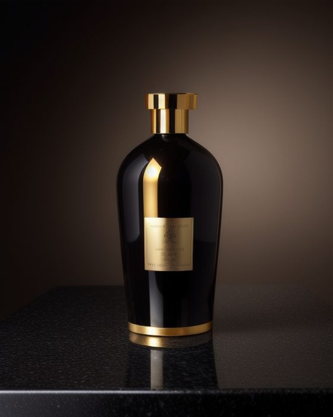
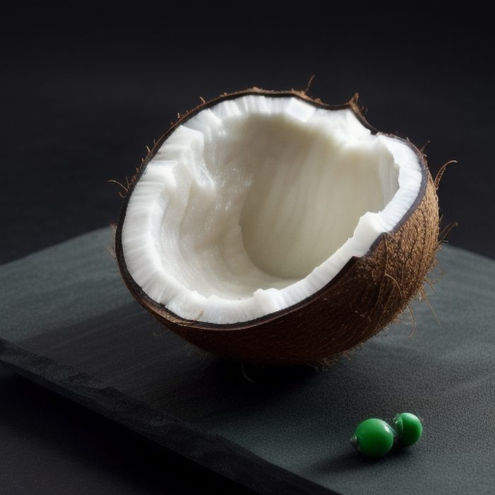

Make images on your own computer.
ShadeForge is a free image generator you run yourself. No account, no API key, and your words never leave your machine. One command sets everything up — there is nothing to configure.
git clone https://github.com/subrahmanyabhat/shadeforge
cd shadeforge && pip install -e '.[preview]'
shadeforge generate "a lighthouse in sea mist"
Needs Python 3.10 or newer. Works on macOS and Linux.
How it works
Install it once
Clone the repository and pip install. About a minute.
Ask for a picture
The first run notices nothing is set up, so it downloads the engine and a model that fits your free disk space, starts it, and begins drawing. You pick nothing.
shadeforge generate "a lighthouse in sea mist"Get a PNG
A counter shows progress while it draws. When it finishes the image opens and the file path is printed. Later runs skip setup and start drawing straight away.
ShadeForge or an online generator?
Most people are choosing between this and a paid service. Here is the honest split.
| ShadeForge | Gemini · Midjourney · DALL·E | |
|---|---|---|
| Price | Free, unlimited | Per image, or monthly |
| Your prompt | Stays on your computer | Uploaded to the company |
| Works offline | Yes, after setup | No |
| Account | None needed | Sign-up and billing |
| Time per image | 5–10 min on an old laptop around 20 seconds on an M-series Mac | Seconds |
| Fussy prompts | Often misses specific details | Considerably more accurate |
| Words in the image | Added afterwards, always spelled right | Usually drawn correctly |
Use ShadeForge for unlimited drafts, private work, or anywhere without internet — when waiting a few minutes is fine. Use an online tool when you need one accurate image right now.
Getting words into a picture
Image models cannot spell. Ask a small one for a bottle labelled “LUXE HAIR SERUM” and you get letter-shaped scribble. ShadeForge stops fighting that: it draws the picture with no words in it, then places real type on top at full size — the way studios actually make adverts.

shadeforge generate "amber serum bottle on black marble, studio light" \
--headline "LUXE HAIR SERUM" --cta "DISCOVER THE RITUAL" --instagram
It chooses the model for you
Different pictures need different models — the one that makes a good product photo makes a poor watercolour. ShadeForge reads your sentence, picks accordingly, and tells you why.
- Photo, product, portrait — a photo-realistic model
- Illustration, watercolour, anime — a drawing model
- Very large images — a high-resolution model
- Anything containing words — the type is added afterwards instead
See what it would choose, without drawing anything:
shadeforge recommend "a watercolour fox"
What it actually produces
Real output, including the misses. Both of these were drawn on a CPU-only 2019 laptop.

Before you install
- Disk: around 5 GB for the engine and one model. It refuses rather than filling your drive.
- Patience: minutes per image on an older machine, seconds on a recent one.
- Accuracy: a paid online model follows fussy instructions better. That is the trade.
- Tested: macOS and Linux. Drawing itself has only been run in earnest on an Intel Mac.
git clone https://github.com/subrahmanyabhat/shadeforge
cd shadeforge && pip install -e '.[preview]'
shadeforge generate "a lighthouse in sea mist"
Using Claude Code?
claude plugin marketplace add subrahmanyabhat/shadeforge
then just ask for an image in conversation.